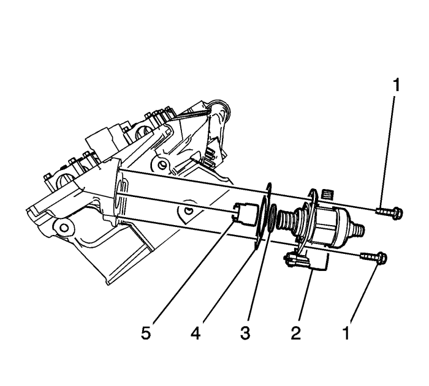

Sustitución de la bomba de combustible
Herramientas especiales
EN-48896 Galga de alineación de la instalación de la bomba de combustible de alta presión
Si desea informarse sobre herramientas regionales equivalentes, consultar Herramientas especiales .
Procedimiento de desmontaje
- Libere la presión del sistema de combustible del lado de baja y alta presión. Consultar Descarga de la presión del combustible .
- Quite la pantalla de la bomba de combustible de alta presión. Consultar Sustitución del protector de la bomba de combustible : LF1 .

- Desenchufe el conector eléctrico del mazo de cables del motor de la bomba de combustible de alta presión.
- Desmonte el tubo de alimentación de baja presión. Consultar Sustitución de la tubería de alimentación de combustible : LF1 .
- Desmonte el tubo de alta presión. Deseche el tubo. Consultar Sustitución de la tubería intermedia de alimentación de combustible : LF1 .
- Quite y deseche los pernos de la bomba de combustible de alta presión (1).
- Desmonte la bomba de combustible de alta presión (2).
- Desmonte y deseche la junta tórica de la bomba de combustible de alta presión (3).
- Desmonte y deseche la junta de la bomba de combustible de alta presión (4).
- Desmonte el empujador de rodillo (5) de la bomba de combustible de alta presión.
Procedimiento de montaje
Nota: El árbol de levas debe estar en la posición de base circular antes de montar la bomba de combustible de alta presión.
- Utilice la galga de alineación EN-48896 para asegurar que el lóbulo del árbol de levas está en la posición de base circular. En la base circular, la herramienta tiene que estar alineada con la culata.
- Lubrique el orificio de la culata para la bomba de combustible de alta presión y el empujador de rodillo con lubricación para el árbol de levas. Consultar Adhesivos, líquidos, lubricantes y selladores .
Nota: La junta de la bomba de combustible de alta presión tiene un dispositivo de fijación para mantener los pernos de fijación de la bomba en su posición.
- Monte el empujador de rodillo (5) de la bomba de combustible de alta presión.
- Coloque una junta tórica (3) NUEVA para la bomba de combustible de alta presión.
- Coloque la NUEVA junta (4) de la bomba de combustible de alta presión y los pernos (1) en la bomba de combustible.
- Monte la bomba de combustible de alta presión (2). Se necesitará emplear fuerza para apretar a mano los pernos.
Precaución: Consulte Precaución con las fijaciones en la sección Prólogo
- Apriete los tornillos de retención de la bomba de combustible de alta presión hasta 15 N·m (11 lb- pie).
- Asegúrese de que la bomba de combustible de alta presión y los empames del tubo de distribución de combustible están limpios antes del montaje.
- Coloque un NUEVO tubo de combustible de alta presión. Consultar Sustitución de la tubería intermedia de alimentación de combustible : LF1 .
- Monte el tubo de alimentación de combustible en la bomba de combustible de alta presión. Consultar Sustitución de la tubería de alimentación de combustible : LF1 .
- Conecte el mazo de cables de la bomba de combustible de alta presión.
- Monte el tapón de depósito de combustible.
Nota: Si se produce una fuga de combustible en el tubo de distribución de combustible, deberá sustituir dicho tubo de distribución.
- Compruebe si existen pérdidas con el procedimiento siguiente:
| 13.1. | Conecte el encendido, con el motor desconectado durante 2 segundos. |
| 13.2. | Desconecte el encendido durante 10 segundos. |
| 13.3. | Ponga en marcha el encendido con el motor apagado. |
| 13.4. | Compruebe si existen pérdidas de combustible. |
- Monte la tapa de liberación de presión en el tubo de alimentación de combustible.
- Monte el colector de admisión. Consultar Sustitución del colector de admisión .
- Monte la pantalla de la bomba de combustible de alta presión. Consultar Sustitución del protector de la bomba de combustible : LF1 .
| © Copyright Chevrolet Europe. All rights reserved |